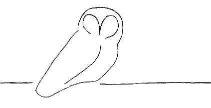

|
 |
Owl Monitoring SystemFull Installation Manual |
The Owl Monitoring System was designed such that the Owl sensor hosts need not be under the same administrative control as the Owl manager host. In fact, each sensor in a set of Owl sensors may be under administrative control of different organizations and still report to a single Owl manager.
An Owl sensor may provide its data to more than one Owl manager. In such situations, the managers operate independently of each other and do not know of each other's existence. Throughout the installation manuals, it will be assumed that an installation will have a single manager. Special instructions for multiple-manager environments will be given where needed.
Contact between sensors and their manager may be initiated and performed by the sensor or the manager. This is a configuration decision that must be made on a case by case basis. The push or pull model may cover all of an Owl manager's sensors. For example, a particular manager may initiate sensor data retrieval from all of its sensors. Also, the push/pull model may be specific to each sensor, so a particular manager could retrieve data from one sensor but wait for another sensor to provide its data.
This document provides an operational overview of the Owl system, installation instructions for the Owl and supporting third-party software. Configuration instructions for the Owl software are also provided, along with configuration information for the required third-party software.
There are two installation manuals, one for the manager and one for the sensor. Sensor administrators only need to read the Owl Sensor Installation Manual. Manager administrators only need to read the Owl Manager Installation Manual As you might expect, those who are administrators for both manager and sensor hosts must read both installation guides.
| Owl Manager Installation Manual | Owl Sensor Installation Manual |
This work was implemented by the following organizations:
This work is funded in part by the following organizations:
U.S. Department of Homeland Security/Science & Technology (S&T)
The Owl logo is copyright © 2012 by Wayne Morrison (Wayne@WayneMorrison.com).
All Rights Reserved.
This logo is used for the Owl Monitoring System by the DNSSEC-Tools Project
(dnssec-tools.org) by permission.
|
Owl Monitoring System Full Installation Manual |